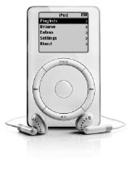

Dijital Merkez
iTunes’tan iPod’a

İlk iPod, 2001
Noktaları Birleştirmek
Jobs en değer verdiği çalışanlarını senede bir kez “Top 100” adını verdiği bir tatile götürüyordu. Bu kişileri basit bir kıstasa göre seçiyordu: Başka bir şirkete geçerken yanına sadece yüz kişi alabilecek olsa kimleri seçeceğine göre. Her tatilin sonunda Jobs bir beyaztahtanın önünde duruyor (yazı tahtalarına bayılıyordu, çünkü tamamen kontrol sahibi olmasını ve insanların odaklanmasını sağlıyorlardı) ve “Şimdi yapmamız gereken on şey nedir?” diye soruyordu. İnsanlar önerilerini listeye yazdırmaya çalışıyorlardı. Jobs önerileri yazıyordu – sonra da salakça bulduklarının üstünü çiziyordu. Gruptakiler epey tartıştıktan sonra on maddelik bir listede karar kılıyorlardı. Sonra Jobs alttaki yedi önerinin üstünü çiziyordu ve “Sadece üçünü yapabiliriz,” diyordu.
2001’e gelindiğinde Apple kişisel bilgisayar satışlarını arttırmıştı. Artık Farklı Düşünmenin vaktiydi. O yıl Jobs’ın beyaztahtasının tepesinde bazı yeni olasılıklar yer aldı.
O sıralar dijital dünyaya ölü toprağı serpilmişti sanki. Dot.com balonu patlamıştı ve NASDAQ %50’dan fazla düşmüştü. Ocak 2001’deki Süper Kupa maçında sadece üç teknoloji şirketinin reklamı vardı; oysa bu rakam geçen sene on yediydi. Piyasanın havasının söndüğü kanısı hâkimdi. Jobs’la Wozniak’ın Apple’ı kurmalarından sonraki yirmi beş sene boyunca, kişisel bilgisayarlar dijital devrimin merkezinde yer almıştı. Şimdiyse uzmanlar onun merkezi rolünü yitireceğini öngörüyorlardı. “Gelişince sıkıcı bir şeye dönüştü,” diye yazdı Wall Street Journal’dan Walt Mossberg. Gateway’in CEO’su Jeff Weitzen ise şöyle dedi: “PC’lerin en ön planda olması durumu değişiyor kesinlikle.”
Tam o sırada Jobs Apple’ı – ve tüm teknoloji endüstrisini dönüştürecek yeni bir büyük stratejiyi uygulamaya başladı. Kişisel bilgisayar kenara çekilmek yerine, müzik çalarlardan video kaydedicilere ve kameralara dek çeşitli cihazları koordine eden bir dijital merkez olacaktı. Bütün bu cihazları bilgisayarınıza bağlayıp senkronize edecektiniz ve bilgisayar bütün şarkılarınızı, videolarınızı, bilgilerinizi ve Jobs’ın tabiriyle “dijital yaşam tarzınızın” tüm yönlerini kontrol etmenizi sağlayacaktı. Apple artık sadece bir bilgisayar şirketi olmayacaktı –hatta ismindeki “Computer” sözcüğünü çıkaracaktı–, ama yine de Macintosh en az bir on yıl daha iPod, iPhone ve iPad gibi heyecan verici cihazların merkezi olacaktı.
Jobs otuz yaşına basarken müzik albümleriyle ilgili bir metafor kullanmıştı. Otuzunu geçmiş insanların neden katı düşünce kalıpları geliştirmeye ve daha az yaratıcılığa meyilli olduklarından bahsediyordu. “İnsanlar plaklardaki çizikleri andıran o kalıplara sıkışıp kalıyorlar ve asla kurtulamıyorlar,” dedi. “Doğuştan meraklı olan, hayata hep çocuk gibi hayretle bakan insanlar da var tabii, ama sayıları az.” Jobs artık 45 yaşındaydı ve kendi kalıbından çıkmaya hazırdı.
Dijital devrimin bu yeni dönemini hayal etmeyi ve kucaklamayı herkesten çok başarabilmesinin birçok sebebi vardı:
• Her zamanki gibi, beşeri bilimlerle teknolojinin kesiştiği noktada duruyordu. Müziğe, fotoğraflara ve videoya bayılıyordu. Bilgisayarlara da bayılıyordu. Bir dijital merkez temelde, yaratıcı sanatlara düşkünlüğümüzü muhteşem mühendislikle birleştirir. Jobs pek çok ürün tanıtımının sonunda basit bir slayt göstermeye başlayacaktı: “Liberal Sanatlar” ve “Teknoloji” sokaklarının kavşağındaki bir sokak tabelası. Jobs orada oturuyordu ve bu sayede dijital merkezi erkenden tasavvur etmeye başlayabilmişti.
• Mükemmeliyetçi olduğundan bir ürünün donanımdan yazılıma, içerikten pazarlamaya dek tüm yönlerini entegre etme dürtüsü duyuyordu. Masaüstü bilgisayar dünyasında bu strateji, Microsoft’la IBM’in benimsediği yaklaşımın (bir şirketin donanımı başka bir şirketin yazılımına açık olmalıdır ve tam tersi) karşısında başarısız olmuştu. Ama dijital merkez ürünlerinde Apple gibi, bilgisayarla aygıtları ve yazılımı entegre eden şirketler avantajlı olacaktı. Bir mobil cihazın içeriği bir eşlenmiş bilgisayar tarafından sorunsuzca kontrol edilebilecekti.
• Sadelik içgüdüsüne sahipti. 2001’den önce başkaları portatif müzik setleri, video editleme yazılımları ve başka çeşitli dijital yaşam tarzı ürünleri üretmişlerdi. Ama bunlar karmaşıktı. Kullanıcı arayüzleri VCR’dan daha kafa karıştıcıydı. iPod ya da iTunes değillerdi.
• Jobs yeni bir vizyona kapıldığında, favori deyişlerinden birini kullanmak gerekirse, “varını yoğunu riske atmaktan” hoşlanıyordu. Dot.com balonunun patlaması diğer teknoloji şirketlerinin yeni ürün geliştirmeye harcadıkları parayı azaltmalarına yol açmıştı. “Herkes bütçelerini kısarken biz piyasanın kötüye gittiği bu süreçte sonuna kadar yatırım yapmaya karar verdik,” diye anımsıyordu Jobs. “Ar-ge’ye para harcayacaktık, bir sürü şey icat edecektik ve böylece piyasa düzeldiğinde rakiplerimizden epey ileride olacaktık.” Bu yaklaşım Apple’ın modern zamanlardaki diğer tüm şirketlerden daha yaratıcı bir onyıl geçirmesini sağladı.
FireWire
Jobs’ın bilgisayarınızı dijital merkezinize dönüştürme hayali, Apple’ın 1990’ların başlarında geliştirdiği FireWire adlı bir teknolojiye dayanıyordu. FireWire video gibi dijital dosyaları bir aygıttan diğerine taşıyan yüksek hızlı bir seri porttu. Japon kaydedici kamera üreticileri onu benimsedi ve Jobs da Ekim 1999’da piyasaya sürülen yeni iMac versiyonunda kullanmaya karar verdi. FireWire’ın kameralardaki videoları editleyebileceğini ve dağıtım yapabilecek bir bilgisayara aktarabileceğini düşünmeye başlamıştı.
Bunun için iMac’in çok iyi bir video editleme yazılımına sahip olması gerekiyordu. Dolayısıyla Jobs Adobe’deki –kurulmasına katkıda bulunduğu dijital grafik şirketindeki– eski arkadaşlarına gitti ve Windows bilgisayarlarında popüler olan Adobe Premier’in yeni bir Mac versiyonunu hazırlamalarını istedi. Adobe yöneticilerinin bunu reddetmesi Jobs’ı afalattı. Macintosh kullanıcılarının sayısının uğraşmaya değmeyecek kadar az olduğunu söylediler. Jobs küplere bindi ve kendini ihanete uğramış hissetti. “Adobe benim sayemde kuruldu ve bana yanlış yaptılar,” diye açıkladı sonradan. Adobe’nin Photoshop ve Quark gibi diğer popüler programlarının Mac OS X versiyonlarını yazmaması durumu iyice kötüleştirdi; oysa Macintosh tasarımcılar ve o uygulamaları kullanan diğer yaratıcı insanlar arasında oldukça popülerdi.
Jobs Adobe’yi asla affetmedi ve on yıl sonra Adobe Flash’in iPad’de kullanılmasına izin vermeyerek şirketle savaşa tutuştu. Bir sistemin bütün anahtar öğelerini uçtan uca kontrol etme tutkusunu körükleyen değerli bir ders almıştı. “1999’da Adobe’nin bize attığı kazıktan aldığım temel ders şuydu ki, bir işe girişeceksek donanımı da yazılımı da kontrol etmemiz gerekiyordu, yoksa sorun yaşardık,” dedi.
Dolayısıyla Apple 1999’dan itibaren Mac için uygulamalar üretmeye başladı, sanatla teknolojinin kesiştiği noktadaki insanlarda odaklanarak. Bu uygulamaların arasında dijital video editlemek için Final Cut Pro; basit bir tüketici versiyonu olan iMovie; disklere video ya da müzik kaydetmek için iDVD; Adobe Photoshop’la rekabet etmek için iPhoto; müzik yapmak ve mikslemek için GarageBand; şarkılarınızı düzenlemek için iTunes ve şarkı satın almak için iTunes Store vardı.
Dijital merkez fikrinde çabucak odaklandı. “Bunun önemini önce video kameralardan anladım,” dedi Jobs. “iMovie kullanmak video kameranın değerini on kat arttırıyor.” Asla oturup izlemeyeceğiniz yüzlerce saatlik ham kayda sahip olmak yerine kaydı bilgisayarınızda editleyebilir ve hoş efektler, müzik ve jenerik ekleyebilir, jeneriğe adınızı baş yapımcı olarak yazabilirdiniz.
Jobs’ın aklına bir fikir daha geldi: Bilgisayar merkez olursa, taşınabilir cihazlar sadeleştirilebilirdi. Cihazlar yapmaya çalıştıkları birçok işi, örneği video ya da fotoğraf editlemeyi kötü yapıyorlardı, çünkü küçük ekranlarına çok işlevli menüler sığdırmak kolay değildi. Bilgisayarlar bu işleri daha kolay yapabilirdi.
Ve bir şey daha... Jobs bunun ancak her şey –cihaz, bilgisayar, yazılım, uygulamalar, FireWire– yakından entegre olduğunda en iyi şekilde işleyeceğini anlamıştı. “Uçtan uca çözümlere iyice inanır oldum,” diye anımsıyordu.
Bu idrakın güzelliği şuydu ki, böyle bir entegre yaklaşımı benimseyecek durumda olan tek bir şirket vardı. Microsoft yazılım üretiyordu, Dell ile Compaq ise donanım üretiyorlardı. Sony birçok dijital cihaz üretiyordu, Adobe birçok yazılım geliştiriyordu. Ama sadece Apple bunların hepsini birden yapıyordu. “Komple bilgisayar – donanım, yazılım ve işletim sistemi üreten tek şirket biziz,” diye açıkladı Time’a. “Kullanıcı deneyiminin tüm sorumluluğunu üstlenebiliyoruz. Başkalarının yapamadığı şeyleri yapabiliyoruz.”
Apple’ın dijital merkez stratejisine ilişkin ilk entegre denemesi video alanında oldu. Videonuzu FireWire’la Mac’inize aktarabiliyordunuz ve iMovie’yle editleyip başyapıta dönüştürebiliyordunuz. Sonra ne olacaktı peki? Onu DVD’ye kaydetmek isteyecektiniz, arkadaşlarınızla birlikte bir televizyondan seyredebilmek için. “Dolayısıyla DVD’ye yazabilen bir tüketici sürücüsü elde etmek için imalatçılarla birlikte epey çalıştık,” dedi Jobs. “Öyle bir şeyi piyasaya süren ilk biz olduk.” Jobs her zamanki gibi ürünü kullanıcı için olabildiğince basit kılmakta odaklandı; ürünün başarısı için çok önemliydi bu. Apple’da yazılım tasarımcılığı yapan Mike Evangelist, Jobs’a arayüzün ilk versiyonlarından birini gösterdiğini anımsıyor. Jobs birkaç ekran resmine baktıktan sonra ayağa fırladı, bir keçeli kalem kaptı ve bir beyaztahtaya basit bir dikdörtgen çizdi. “İşte yeni uygulama,” dedi. “Tek bir penceresi var. Videonu pencerenin içine sürüklüyorsun. Sonra yak düğmesine basıyorsun. O kadar. İşte bunu yapacağız.” Evangelist afallamıştı, ama o fikir iDVD’nin sade olmasını sağladı. Jobs “yak” tuşu ikonunun tasarımında bile yardımcı oldu.
Jobs dijital fotoğrafçılığın patlama yapmak üzere olduğunu biliyordu, dolayısıyla Apple bilgisayarı fotoğraf merkezi haline getirmenin yollarını da geliştirdi. Ama Jobs en azından ilk senede, asıl büyük fırsatı fark edemedi. HP ve başka birkaç şirket, CD’lere müzik kaydedebilen bir sürücü üretiyorlardı. Ama Jobs Apple’ın müzikten çok videoda odaklanmasında diretti. Ayrıca Jobs’ın iMac’in tepsili sürücüsünün yerini daha zarif bir slotlu sürücünün alması gerektiğinde öfkeyle ısrar etmesi, iMac’te ilk CD yazıcıların kullanılamayacağı anlamına geliyordu, çünkü bunlar başta tepsili formatta üretildiler. “O fırsatı kaçırdık diyebilirim,” diye anımsıyordu. “O yüzden farkı hızla kapamamız gerekiyordu.”
Yenilikçi bir şirketin tek göstergesi yeni fikirleri ilk bulan şirket olması değildir. Yenilikçi bir şirket geride kaldığında sıçrayarak ilerlemesini de bilir.
iTunes
Jobs’ın müzik işinin epey büyüyeceğini anlaması uzun sürmedi. İnsanlar CD’lerden bilgisayarlarına müzik aktarıyorlardı ya da Napster gibi dosya paylaşım hizmetlerini kullanarak indirdikleri şarkıları kendi boş disklerine kaydediyorlardı; 2000 senesinde bunlar artık furya halini almıştı. O yıl A.B.D.’de 320 milyon adet boş CD satıldı. Ülkede sadece 281 milyon insan vardı. Yani CD’ye kayıt yapmaya gerçekten düşkün insanlar vardı ve Apple onlara ürün sunamıyordu. “Kendimi salak gibi hissediyordum,” dedi Jobs Fortune’a. “Fırsatı kaçırdık sandım. Yetişmek için epey çalışmak zorunda kaldık.”
Jobs iMac’e bir CD yazıcı ekledi, ama bu yeterli değildi. Hedefi CD’den bilgisayara müzik aktarmayı ve sonra playlistleri CD’ye kaydetmeyi basitleştirmekti. Diğer şirketler şimdiden müzik yönetimi uygulamaları üretmekteydiler. Ama bunlar kullanışsız ve karmaşık uygulamalardı. Jobs’ın yeteneklerinden biri, ikinci sınıf ürünlerle dolu pazarları fark edebilmesiydi. Piyasadaki müzik uygulamalarına –ki aralarında Real Jukebox, Windows Media Player ve HP’nin CD yazıcısıyla birlikte verdiği bir program vardı– baktı ve bir hükme vardı. “Öyle karmaşıktılar ki, bir dahi bile özelliklerinin ancak yarısını çözebilirdi,” dedi.
O zaman Bill Kincaid devreye girdi. Eskiden Apple’da yazılım mühendisi olan Kincaid, California, Willows’taki bir yarış pistine, Formula Ford spor arabasıyla yarışmaya giderken Devlet Radyosu’nu (biraz uyumsuz bir şekilde) dinliyordu. MP3 adlı bir dijital şarkı formatını çalan Rio adlı bir portatif müzik çalardan bahsedildiğini işitti. Muhabirin “Mac kullanıcıları heyecanlanmasınlar, çünkü Mac o formatı çalamıyor,” dediğini duyunca pür dikkat kesildi. “Hah! Ben o işi halledebilirim!” dedi kendi kendine.
Mac için bir Rio programı yazmasına yardım etsinler diye arkadaşları Jeff Robbin’le Dave Heller’ı aradı; onlar da eskiden Apple’da yazılım mühendisliği yapmışlardı. Ürettikleri SoundJam adlı ürün Mac kullanıcılarına bir Rio arayüzü, bilgisayarlarındaki şarkıları çalmaları için bir müzik kutusu ve çalan müziğe göre hareket eden bazı küçük, tripsi ekran ışıkları sunuyordu. Temmuz 2000’de, Jobs ekibine bir müzik düzenleme yazılımı üretmeleri için baskı yaparken, Apple SoundJam’i satın aldı ve kurucularını Apple’a geri getirdi. (Üçü de şirkette kaldılar ve Robbin sonraki on yıl boyunca müzik yazılımı geliştirme ekibini yönetmeyi sürdürdü. Jobs ona öyle değer veriyordu ki, bir Time muhabirinin onunla görüşmesine ancak soyadını yazmayacağına söz verdirdikten sonra izin verdi.)
Jobs SoundJam’i bir Apple ürününe dönüştürmek için onlarla birlikte bizzat çalıştı. SoundJam çeşitli özelliklere sahipti, dolayısıyla bir sürü karmaşık ekranı vardı. Jobs onları yazılımı daha basit ve daha eğlenceli hale getirmeye yöneltti. Jobs bir sanatçı mı, şarkı mı yoksa albüm mü aradığınızı belirtmenizi dayatan bir arayüz yerine, içine istediğiniz her şeyi yazabileceğiniz basit bir kutuda diretti. Ekip iMovie’nin fırçalanmış şık metal görüntüsünü ve ismini kopyaladı ve bir isim buldu: iTunes
Jobs’ın iTunes’u Ocak 2001’deki Macworld’de tanıtması dijital merkez stratejisinin parçasıydı. iTunes’un bütün Mac kullanıcılarına bedava olacağını açıkladı. “iTunes’la müzik devrimine katılın ve müzik aygıtlarınızın değerini on katına çıkarın,” diye sözünü bitirince alkış koptu. Sonradan reklam sloganının diyeceği gibi: “Kopyala. Miksle. Yak.”
Jobs o günün ikindisinde New York Times’tan John Markoff’la görüştü. Röportaj kötü gidiyordu, ama sonunda Jobs Mac’inin başına oturup iTunes’u gösterdi. “Bana gençliğimi hatırlatıyor,” dedi, ekranda psikedelik şekiller dans ederken. Aklına LSD kullandığı günler geldi. Jobs Markoff’a LSD kullanmanın hayatında yaptığı en önemli iki üç şeyden biri olduğunu söyledi. Hiç LSD kullanmamış insanlar onu asla tamamen anlamayacaklardı.
iPod
Dijital merkez stratejisinin bir sonraki adımı bir portatif müzik çalar üretmekti. Jobs Apple’ın böyle bir cihazı iTunes yazılımıyla uyumlu olacak şekilde tasarlama ve böylece daha basit olmasını sağlama fırsatına sahip olduğunu fark etti. Karmaşık görevleri bilgisayar, kolaylarıysa cihaz halledebilirdi. Böylece iPod doğdu; bu cihaz sonraki on yılda Apple’ı bir bilgisayar üreticisinden dünyanın en değerli teknoloji şirketine dönüştürecekti.
Jobs bu projeye özellikle düşkündü, çünkü müziğe bayılıyordu. Piyasadaki müzik çalarların “gerçekten berbat” olduklarını söyledi iş arkadaşlarına. Phil Schiller, Jon Rubinstein ve ekibin geri kalanı hemfikirdiler. iTunes’u hazırlarken Rio’yla ve diğer müzik çalarlarla oynadılar ve onları keyifle eleştirdiler. “Oturup bunlar cidden çok kötü diyorduk,” diye anımsıyordu Schiller. “Sadece on altı civarında şarkı alabiliyorlardı ve nasıl kullanacağını çözemiyordun.”
Jobs 2000’in sonbaharında bir portatif müzik çalar istemeye başladı ısrarla, ama Rubinstein henüz ellerinde gerekli parçaların bulunmadığını söyledi. Jobs’a beklemesini söyledi. Birkaç ay sonra Rubinstein uygun bir küçük LCD ekran ve şarj edilebilir bir lityum polimer batarya bulmayı başardı. Ama işin zor kısmı yeterince küçük olan, ama müzik çaları muhteşem kılmaya yetecek kadar belleğe sahip bir disk sürücü bulmaktı. Sonra, Şubat 2001’de, Apple tedarikçilerini rutin olarak ziyaret etmek için Japonya’ya gitti.
Toshiba çalışanlarıyla yaptığı rutin bir toplantının sonunda mühendisler üstünde çalıştıkları, Haziran’a kadar hazır olacak bir üründen bahsettiler. 5 gigabayt depolama kapasiteli (aşağı yukarı bin şarkı sığacak kadar), 1.8 inçlik (madeni para boyutunda), küçük bir sabit disk olacak bu ürünü ne yapacaklarını bilmiyorlardı. Toshiba mühendisleri onu Rubinstein’a gösterdiklerinde, Rubinstein onun ne işe yarayabileceğini hemen anladı. Cepte taşınan bin şarkı! Mükemmeldi. Ama heyecanını belli etmedi. Jobs da Japonya’daydı, Tokyo Macworld konferansının açılış konuşmasını yapıyordu. O gece, Jobs’ın kaldığı Okura Oteli’nde buluştular. “Nasıl yapacağımızı biliyorum,” dedi Rubinstein ona. “10 milyon dolarlık bir çeke ihtiyacım var sadece.” Jobs ona hemen çeki yazdı. Bunun üzerine Rubinstein o diskin tüm haklarını satın almak için Toshiba’yla pazarlık etmeye ve geliştirme ekibini yönetebilecek birini aramaya başladı.
Tony Fadell siberpunkçı gibi görünse de canayakın gülümseyen, henüz Michigan Üniversitesi’nde okurken üç şirket kurmuş olan girgin ve girişimci bir yazılımcıydı. El cihazları üreticisi General Magic’te çalıştıktan (ve orada eski Apple çalışanları Andy Hertzfeld ve Bill Atkinson’la tanıştıktan) sonra Philips Electronics’te biraz zaman geçirmiş, ağartılmış kısa saçlarıyla ve asi tavırlarıyla oranın ağırbaşlı ortamına ters düşmüştü. Daha iyi bir dijital müzik çalar yaratmak için bazı fikirler bulmuş ve bunları RealNetworks, Sony ve Philips’e pazarlamaya çalışsa da başarılı olamamıştı. Bir gün Vail’de amcasıyla kayak yaparken, teleferik içinde cep telefonu çaldı. Arayan Rubinstein’dı ve ona Apple’ın “küçük bir elektronik cihazın” üstünde çalışacak birini aradığını söyledi. Özgüven sıkıntısı olmayan Fadell böyle cihazlar konusunda uzman olduğunu söyleyerek kendini övdü. Rubinstein onu Cupertino’ya davet etti.
Fadell Newton’ın devamı olacak bir kişisel dijital asistanın üstünde çalışması için işe alınacağını varsaydı. Ama Rubinstein’la görüşünce konu üç aydır piyasada olan iTunes’a geldi hemen. “Varolan MP3 çalarları iTunes’a bağlamaya çalışıyoruz ve korkunçlar, resmen korkunçlar,” dedi Rubinstein ona. “Kendi versiyonumuzu üretmemiz gerektiğini düşünüyoruz.”
Fadell çok sevindi. “Müzik tutkunuydum. Real Networks’te öyle işler yapmaya çalışıyordum biraz ve bir MP3 çaları Palm’la uyumlu hale getiriyordum.” Ekibe en azından danışman olarak katılmayı kabul etti. Birkaç hafta sonra Rubinstein, ekibi yönetecekse tam günlük Apple çalışanı olması gerektiğini söyledi. Ama Fadell direndi. Özgürlüğünü seviyordu. Rubinstein küplere bindi; Fadell’ın sızlandığını düşünüyordu. “Bu insanın hayatını değiştirecek kararlardan biri,” dedi ona. “Asla pişman olmazsın.”
Fadell’ı zorlamaya karar verdi. Projeye atanmış yirmi kadar kişiyi bir odada topladı. Fadell içeri girince Rubinstein ona “Tony, tam gün çalışmayı kabul etmezsen bu projede çalışmayacağız,” dedi. “Var mısın, yok musun? Hemen şimdi karar vermelisin.”
Fadell Rubinstein’ın gözlerine baktı, diğerlerine döndü ve “Apple’de insanı böyle zorlarlar mı hep?” dedi. Bir an duraksadıktan sonra tamam dedi ve Rubinstein’ın elini gönülsüzce sıktı. “O olay Jon’la aramın yıllarca açık olmasına yol açtı,” diye anımsıyordu Fadell. Rubinstein hemfikirdi: “Beni asla affetmedi sanırım.”
Fadell’la Rubinstein’ın çatışmaları kaçınılmazdı, çünkü ikisi de iPod’un babası olduklarını düşünüyorlardı. Rubinstein’ın bakış açısına göre, kendisi Jobs’tan o görevi aylar önce almıştı, Toshiba’nın sabit diskini bulmuştu ve ekran, batarya gibi önemli öğeleri seçen de kendisiydi. Sonra da bütün bunları bir araya getirsin diye Fadell’ı işe almıştı. Fadell’ın dikkat çekiciliğinden hazzetmeyen o ve diğerleri ona “Palavracı Tony” lakabını taktılar. Oysa Fadell’ın bakış açısına göre, kendisi Apple’a gelmeden önce muhteşem bir MP3 çaları zihninde tasarlamıştı bile ve Apple’a gelip onu yaratmadan önce başka şirketleri ikna etmeye çalışmıştı. iPod’un yaratılmasında en çok kimin pay sahibi olduğu, bir başka deyişle onun manevi babasının kim olduğu meselesi röportajlarda, makalelerde, web sayfalarında ve hatta Wikipedia girilerinde tartışılacaktı yıllarca.
Ama ilk birkaç ay tartışamayacak kadar meşguldüler. Jobs iPod’un Noel’e kadar piyasaya sürülmesini istiyordu, yani Ekim’de tanıtımı yapılmalıydı. Apple’ın çalışmalarında temel alabileceği MP3 çalarlar tasarlayan şirketler aradılar ve PortalPlayer adlı küçük bir şirketi seçtiler. Fadell oradaki ekibe “Bu proje Apple’ı değiştirecek ve on yıl sonra bu bilgisayar değil müzik işi olacak,” dedi. Onları bir telif sözleşmesi imzalamaya ikna etti ve kendi ekibi PortalPlayer’ın karmaşık arayüzler, kısa batarya ömrü ve şarkı listelerinde on şarkı sınırı gibi kusurlarını düzeltmeye başladı.
“İşte bu!”
Bazı toplantılar hem tarihe geçecek kadar önemli oldukları, hem de bir liderin hareket tarzını sergiledikleri için hatırlanmaya değerdir. Nisan 2001’de dördüncü kattaki toplantı odasında düzenlenen, Jobs’ın iPod’un temel özelliklerinde karar kıldığı toplantı bunlardan biriydi. Rubinstein, Schiller, Ive, Jeff Robbin ve pazarlama müdürü Stan Ng, Fadell’ın Jobs’a önerilerini sunmasını dinlemek için oradaydılar.
Fadell Jobs’la bir yıl önce, Andy Hertzfeld’in evinde düzenlenen doğumgünü partisinde tanışmıştı ve onunla ilgili pek çok şey duymuştu (çoğu tüyler ürperticiydi). Ama Jobs’ı aslında tanımadığından çekingendi anlaşılır bir şekilde. “Toplantı odasına girdiğini görünce dikeldim ve ‘Vay canına, işte Steve!’ dedim. Savunma modundaydım, çünkü çok kaba olabildiğini duymuştum.”
Toplantı pazar potansiyeline ve diğer şirketlerin neler yaptıklarına ilişkin bir sunumla başladı. Jobs her zamanki gibi sabırsızdı. “Slayt gösterilerini bir dakikadan fazla seyretmez,” dedi Fadell. Jobs pazardaki muhtemel rakiplerle ilgili bir slayt çıktı mı eliyle geç işareti yapıyordu. “Sony’yi merak etmeyin,” dedi. “Biz ne yaptığımızı biliyoruz, onlarsa bilmiyorlar.” Sonrasında slayt göstermeyi kestiler ve Jobs grubu soru yağmuruna tuttu. Fadell bir ders aldı: “Steve anı yaşamayı, meseleleri ayrıntılarıyla konuşmayı yeğliyor. Bir keresinde bana dedi ki: ‘Slaytlara ihtiyacın varsa, konuştuğun konuyu bilmiyorsundur.’”
Jobs hissedebileceği, inceleyebileceği, dokunabileceği fiziksel nesneler gösterilmesinden hoşlanıyordu. Bu yüzden Fadell toplantı odasına üç farklı model getirdi; Rubinstein onu modelleri sırayla göstermeye ve asıl beğendiği modeli sona saklamaya ikna etmişti, Jobs etkilensin diye. O modeli masanın ortasındaki bir ahşap kâsenin altına sakladılar.
Fadell gösterisine kullandıkları çeşitli parçaları bir kutudan çıkarıp masaya yaymakla başladı. 1.8 inçlik sabit disk, LCD ekran, kartlar ve bataryalar vardı; hepsinin de maliyetleri ve ağırlıkları etiketlenmişti. Fadell onları gösterirken, bir yıl içinde fiyatların ve boyutların ne kadar azalabileceğini konuştular. Bazı parçalar Lego blokları gibi birleştirilebiliyordu.
Sonra Fadell strafordan yapılma, uygun ağırlığa gelsinler diye içlerine olta kurşunları konmuş modellerini göstermeye başladı. Birincisinde şarkı kaydedilebilecek harici hafıza kartı takmak için bir slot vardı. Jobs bu modeli fazla karmaşık bulduğu için beğenmedi. İkincisinde dinamik RAM bellek vardı, dolayısıyla ucuzdu, ama şarj biterse bütün şarkılar silinirdi. Jobs bundan hoşlanmadı. Sonra Fadell 1.8 inçlik sabit diskli cihazın nasıl olacağını göstermek için birkaç Lego parçasını birleştirdi. Jobs ilgilenmiş gibiydi. Bunun üzerine Fadell şovun doruk noktasında kâseyi kaldırıp o seçeneğin tamamlanmış modelini gösterdi. “Lego parçalarıyla biraz daha oynamayı umuyordum, ama Steve sabit diskli modeli olduğu haliyle beğendi,” diye anımsıyordu Fadell. Epey afallamıştı. “Philips’te böyle kararların ancak bir sürü toplantıdan, bir sürü PowerPoint sunumundan ve araştırmadan sonra verilmesine alışıktım.”
Sıra Phil Schiller’daydı. “Artık fikrimi gösterebilir miyim?” diye sordu. Odadan çıktı ve bir avuç iPod modeli getirdi; hepsinin de ön yüzünde yakında ünlü olacak dokunmatik teker vardı. “Çalma listesinde nasıl gezileceğini düşünüyordum,” diye anımsıyordu. “Bir düğmeye yüzlerce kez basamazsınız. Bir teker harika olmaz mıydı?” Tekeri baş parmağınızla çevirerek şarkıdan şarkıya geçebilecektiniz. Tekeri ne kadar uzun süre çevirirseniz şarkıdan şarkıya o kadar hızlı geçecektiniz, dolayısıyla yüzlerce şarkıyı geçmek kolay olacaktı. Jobs “İşte bu!” diye bağırdı. Fadell’la mühendislere bunun üstünde çalışmalarını söyledi.
Proje başlatılınca Jobs onunla her gün ilgilendi. Ana talebi “Sadeleştirin!” idi. Kullanıcı arayüzünün bütün ekranlarını kontrol ediyor ve katı bir test uyguluyordu: Bir şarkıya ya da işleve ulaşmak için en fazla üç tıklama yapmalıydı. Ayrıca nereye tıklayacağını kolayca bulabilmeliydi. Bir şeye nasıl ulaşacağını kolayca bulamıyorsa ya da üç tıklamadan fazlası gerekiyorsa kabalaşıyordu. “Bazen bir kullanıcı arayüzü sorununa kafa patlatıyorduk ve bütün seçenekleri düşündüğümüzü sanırken Steve ‘Bunu düşündünüz mü?’ diyordu,” dedi Fadell. “O zaman hepimiz ‘Hassiktir,’ diyorduk. Sorunu ya da yaklaşımı yeniden tanımlıyordu ve o zaman küçük sorunumuz halloluyordu.”
Jobs her gece fikirlerini telefonda konuşuyordu. Fadell’la diğerleri, hatta Rubinstein bile, Jobs onlara bir fikir söylediğinde Fadell’ın fikirlerinin arkasında duruyorlardı. Birbirlerini arayıp Jobs’ın en son önerisini açıklıyor ve ona istedikleri şeyi kabul ettirmek için işbirliği yapıyorlardı; bu girişimlerinin aşağı yukarı yarısında başarılı oluyorlardı. “Steve’in son fikirlerinin bir adım ötesinde olmaya çalışıyorduk,” dedi Fadell. “Her gün yeni bir şey çıkıyordu: bir anahtar, tuş rengi ya da fiyatlandırma stratejisi meselesi. Steve’le birlikte çalışırken iş arkadaşlarınla işbirliği yapman, birbirini kollaman gerekiyordu.”
Jobs’ın temel fikirlerinden biri, olabildiğince çok işlevin iPod yerine bilgisayarınızdaki iTunes kullanılarak halledilmesi gerektiğiydi. Sonradan anımsadığı gibi:
iPod’un kullanımını gerçekten kolay kılmak için cihazın yapabileceklerini sınırlamamız gerekiyordu –bu konuda epey tartışmak zorunda kaldım–. O işlevleri bilgisayardaki iTunes’un halletmesini sağladık. Örneğin cihazla playlist hazırlanamıyordu. Playlistleri iTunes’ta hazırlayıp sonra cihazı bağlıyordun. Bu tartışmalara yol açtı. Ama Rio’yla diğer cihazları berbat kılan şey karmaşık olmalarıydı. Playlist hazırlamak gibi şeyler yapmaları gerekiyordu, çünkü bilgisayardaki müzik kutusu yazılımıyla entegre değillerdi. iTunes yazılımıyla iPod cihazının sahibi olmak, bilgisayarla cihazın birlikte çalışmalarını sağlamamıza ve deneyimi karmaşıklaştırmamıza imkân verdi.
Jobs’ın Zen’e en yakın sadeleştirmesi iPod’a açma-kapama düğmesi koydurmamak oldu; iş arkadaşları hayrete kapıldılar. Bu özellik birçok Apple ürününde yer alacaktı. Açma kapama düğmesi gereksizdi. Estetik ve teolojik açıdan kötüydü. Apple cihazları kullanılmadıklarında pasif hale geçeceklerdi ve herhangi bir tuşa dokunduğunuzda uyanacaklardı. Kapamak için düğmeye gerek yoktu.
Birden her şey yerine oturmuştu. Bin şarkı sığacak bir çip. Bin şarkıyı gezmenizi sağlayacak bir arayüz ve kaydırma tekerleği. Bin şarkıyı on dakikadan kısa sürede yükleyebilecek bir FireWire bağlantısı. Ve şarjı bin şarkı çalmaya yetecek bir batarya. “Birden bakışmaya ve ‘Bu harika olacak,’ demeye başladık,” diye anımsıyordu Jobs. “Ne kadar harika olduğunu biliyorduk, çünkü hepimiz bir tanesine şahsen sahip olmaya can atıyorduk. Ve konsept öyle güzel bir sadeliğe büründü ki: Cebinizde bin şarkı.” Metin yazarlarından biri cihaza “Pod” adını vermelerini önerdi. Jobs ise iMac ve iTunes’tan esinlenerek iPod ismini buldu.
O bin şarkı nereden gelecekti? Jobs bazılarının yasal olarak satın alınan CD’lerden ripleneceğini biliyordu, ki bu sorun değildi, ama yasa dışı indirilen birçok şarkı da yüklenebilirdi. Kaba bir ticari mantıkla bakıldığında, Jobs yasa dışı indirmeleri desteklerse kazançlı çıkacaktı; çünkü insanlar iPod’larını daha ucuza doldurabileceklerdi. Ayrıca karşıkültür kökeni, plak şirketlerine sempati duymamasına yol açıyordu. Ama fikri mülkiyetin korunması ve sanatçıların eserlerinden para kazanmaları gerektiğine inanıyordu. Dolayısıyla geliştirme sürecinin sonlarına doğru, senkronizasyonun tek yönlü olacağını bildirdi. İnsanlar bilgisayarlarından iPod’larına şarkı taşıyabileceklerdi, ama iPod’larından bilgisayarlara şarkı taşıyamayacaklardı. Böylece insanların iPod’larını doldurmalarından sonra, o iPod’lardaki bütün şarkıların düzinelerce arkadaşları tarafından kopyalanmasını engelledi. Ayrıca iPod’un üzerindeki şeffaf plastik çıkartmada basit bir mesajın, “Müzik Hırsızlığı Yapmayın” mesajının bulunmasına karar verdi.
Balina Beyazlığı
Jony Ive, iPod’un köpük modeliyle oynamayı bitirmişti ve tamamlanmış ürünün nasıl görünmesi gerektiğini bulmaya çalışırken, bir sabah San Francisco’daki evinden Cupertino’ya giderken aklına bir fikir geldi. Arabadaki iş arkadaşına cihazın bembeyaz olması ve cilalı paslanmaz çelikten yapılma arka yüze lehimsiz tutturulması gerektiğini söyledi. “Küçük tüketici ürünlerinin çoğu kısa zamanda çöpe atılacak hissi verir,” dedi Ive. “Kültürel ağırlık taşımazlar. iPod’da en gurur duyduğum şey kolayca çöpe atılır değil, önemli bir şey olduğu hissini vermesi.”
Cihaz sadece beyaz değil, bembeyaz olacaktı. “Sadece cihaz değil, kulaklık ve kablolar ve hatta fiş bile,” diye anımsıyordu. “Bembeyaz.” Kulaklığın diğer bütün kulaklıklar gibi siyah olması gerektiğini söyleyenler çıktı elbette. “Ama Steve beni hemen anladı ve beyazı benimsedi,” dedi Ive. “Cihazın bir saflığı olacaktı.” Beyaz kulaklık kablolarının kıvrımlı akıcılığı iPod’un ikon olmasına katkıda bulundu. Ive’ın söylediği gibi:
iPod’un hem çok önemli ve kalıcı, ama bir yandan da çok sessiz ve çok kontrollü bir havası vardı. Yüzünüze kuyruğunu sallamıyordu. Kontrollüydü, ama o akıcı kulaklığıyla çılgındı da. Beyazı bu yüzden seviyorum. Beyaz nötr bir renk değildir sadece. Öyle saf ve sessizdir ki. Çarpıcı ve dikkat çekicidir, ama bir yandan da göze batmaz.
Lee Clow’un TBWA\Chiat\Day’deki reklam ekibi, iPod’un özelliklerini öven geleneksel ürün tanıtıcı reklamlar hazırlamak yerine iPod’un ve beyazlığının ikonikliğini vurgulamaya karar verdiler. Geçenlerde ajansa katılan, eskiden bir müzik grubunda çalmış ve DJ’lik yapmış genç, uzun boylu ve zayıf bir İngiliz olan James Vincent, Apple’ın tanıtımının asi Bebek Patlaması Kuşağı yerine modaya düşkün Milenyum Kuşağı’nda odaklanmasına doğal yeteneğiyle katkıda bulundu. Sanat direktörü Susan Alinsagan’ın yardımıyla, iPod için bir dizi reklam panosu afişi ve poster hazırladılar ve seçenekleri Jobs’ın masasına, incelesin diye bıraktılar.
Sağ uca en geleneksel seçenekleri koydular; bunlarda iPod’un düz çekilmiş fotoğrafları vardı ve arka plan beyazdı. Sol uca en grafik ve simgesel anlatımlı seçenekleri koydular; bunlarda sadece iPod dinlerken dans eden birinin silüeti görülüyordu ve iPod’un beyaz kulaklık telleri müzik eşliğinde kıvrılıyordu. “Müzikle aranızdaki duygusal ve son derece kişisel ilişkiyi anlayan bir reklamdı,” dedi Vincent. Yaratıcı yönetmen Duncan Miller’a hep birlikte en solda durmalarını, böylece belki Jobs’ı etkileyebileceklerini söyledi. Jobs odaya girince dosdoğru sağa gitti ve yalın ürün fotoğraflarına baktı. “Bu harika görünüyor,” dedi. “Bunlardan konuşalım.” Vincent, Miller ve Clow diğer uçtan ayrılmadılar. Jobs sonunda başını kaldırıp simgesel reklamlara göz attı ve “Ha, siz bunları seviyorsunuz galiba,” dedi. Hayır anlamında kafa salladı. “Bu ürünü göstermiyor. Ne olduğunu söylemiyor.” Vincent simgesel görüntüleri kullanmalarını, ama altına “1.000 şarkı cebinizde” yazısını eklemelerini önerdi. Böylece her şey açıklanmış olacaktı. Jobs masanın sağ ucuna tekrar göz attıktan sonra nihayet kabul etti. Daha simgesel reklamlara yönelmenin kendi fikri olduğunu kısa sürede iddia etmeye başlaması şaşırtıcı değildi. “Bazı şüpheciler ‘Bu iPod’un satışlarına nasıl katkıda bulunacak ki?’ diye soruyorlardı,” diye anımsıyordu Jobs. “CEO olmam o zaman işi yaradı; istediğimi yaptırabildim.”
Jobs Apple’ın entegre bir bilgisayar, yazılım ve donanım sistemine sahip olmasının bir avantaj daha getirdiğini fark etti. iPod’un satışları iMac’in satışlarını arttıracaktı. Böylece Jobs, Apple’ın iMac’in tanıtımına harcadığı 75 milyon doları alıp iPod reklamlarına harcayabilecekti – bir taşla iki kuş vuracaktı. Aslında üç kuş, çünkü reklamlar Apple markasının tamamına ışıltı ve gençlik katacaklardı. Şöyle anımsıyordu:
iPod’u tanıtmakla iMac satışlarını iki katına çıkarabileceğimiz gibi çılgınca bir fikre kapıldım. Ayrıca iPod, Apple’a yenilikçi ve genç bir imaj katacaktı. Bu yüzden 75 milyon dolarlık reklam bütçesini iPod’a aktardım, o ürün kategorisi bu bütçenin yüzde birini bile hak edecek kadar önemli görünmese de. Böylece müzik çalar piyasasının tek hâkimi olduk. Herkesten yüz kat daha fazla para harcadık.
Televizyon reklamında, simgesel silüetler Jobs, Clow ve Vincent tarafından seçilmiş şarkılar eşliğinde dans ediyorlardı. “Müzik seçmek haftalık pazarlama toplantılarımızdaki en büyük eğlencemiz haline geldi,” dedi Clow. “Kıpır kıpır bir şarkı çalıyorduk, Steve ‘Hiç beğenmedim,’ diyordu, sonra da James onu ikna ediyordu.” Reklamlar birçok yeni grubun, özellikle de Black Eyed Peas’in tanınmasını sağladı; “Hey Mama”lı reklam, silüet janrının klasiğidir. Yeni bir reklam hazırlanmak üzereyken Jobs çoğunlukla fikir değiştiriyordu ve Vincent’ı arayıp reklamın iptal edilmesini söylüyordu. “Müzik fazla popsu,” veya “Fazla ciddiyetsiz,” diyordu. “İptal edelim.” James sinirleniyor ve onu vazgeçirmeye çalışıyordu. “Merak etme, muhteşem olacak,” diyordu. Jobs mutlaka pes ediyordu, reklam hazırlanıyordu ve Jobs ona bayılıyordu.
Jobs iPod’u 23 Ekim 2001’de, alametifarikası olan ürün tanıtım etkinliklerinden birinde tanıttı. “İpucu: Bir Mac değil,” diye yazılıydı davetiyede. Jobs ürünün teknik özelliklerinden bahsettikten sonra, onu sergileme vakti geldiğinde, her zamanki numarasını yapmadı; masaya gidip bir kadife kumaşı kaldırmadı. Bunun yerine şöyle dedi: “Cebimde bir tane var.” Kot pantolonunun cebinden o ışıl ışıl, beyaz cihazı çıkardı. “Bu küçük, muhteşem cihaz bin şarkı alabiliyor ve cebime sığıyor.” Cihazı cebine geri koydu ve sahneden alkış yağmuru eşliğinde, salına salına indi.
Teknoloji tutkunlarından bazıları başta iPod’u şüpheyle karşıladılar, özellikle de fiyatının 399 dolar olması yüzünden. Blogosferde iPod’un açılımının “idiots price our devices”[32] olduğu esprisi yapıldı. Ancak tüketiciler kısa sürede ürünün hit olmasını sağladılar. Dahası iPod, Apple’ın olmaya yazgılı olduğu her şeyin özü haline geldi: Mühendislikle bağlantılı şiir, teknolojiyle kesişen sanat ve yaratıcılık, cüretkâr ve sade tasarım. Bilgisayardan FireWire’a, cihazdan yazılıma ve içerik yöneticisine dek entegre bir uçtan uca sistem olduğundan kullanımı kolaydı. Bir iPod’u kutudan çıkardığınızda öyle güzel görünüyordu ki parlıyordu sanki ve diğer bütün müzik çalarların Özbekistan’da tasarlanıp üretilmiş gibi görünmelerine yol açıyordu.
Orijinal Mac’ten beri ilk kez net bir ürün vizyonu bir şirketi geleceğe böylesine taşıyordu. “Apple’ın neden yeryüzünde olduğunu merak eden varsa iPod’u iyi bir sebep olarak gösteririm,” dedi Jobs o sıralar, Newsweek’ten Steve Levy’ye. Entegre sistemlere epeydir şüpheyle yaklaşan Wozniak felsefesini değiştirmeye başladı. “Vay canına, bunu Apple’ın üretmesi mantıklı,” dedi Wozniak şevkle, iPod’un piyasaya sürülmesinden sonra. “Sonuçta Apple bütün tarihi boyunca hem donanım hem de yazılım üretti ve birbirleriyle daha iyi çalışmalarını sağladı.”
Levy iPod’la ilgili röportaj yaptığı günün akşamında Bill Gates’le yemek yerken cihazı ona gösterdi. “Bunu gördün mü?” diye sordu Levy. Levy’nin söylediğine göre: “Gates hani şu bilimkurgu filmlerindeki, yeni bir nesneyle karşılaşan bir uzaylının kendisiyle nesne arasında bir çeşit güç tüneli yaratması ve böylece onunla ilgili bütün bilgileri doğrudan beynine emebilmesi gibi, başka bir boyuta geçti.” Gates dokunmatik tekeri kurcalarken ve bütün olası tuş kombinasyonlarına basarken gözlerini ekrandan hiç ayırmadı. “Muhteşem bir ürüne benziyor,” dedi sonunda. Ardından duraksadı ve şaşkın bir ifade takındı. “Sadece Macintosh için mi?” diye sordu.